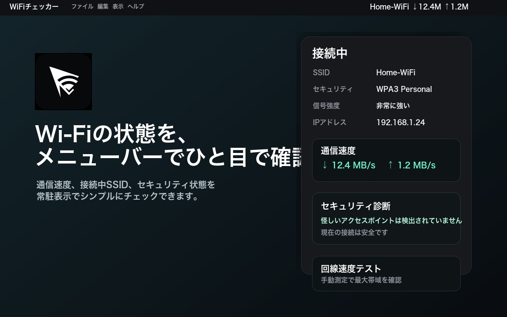
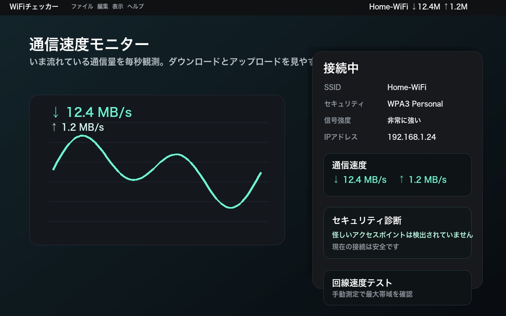
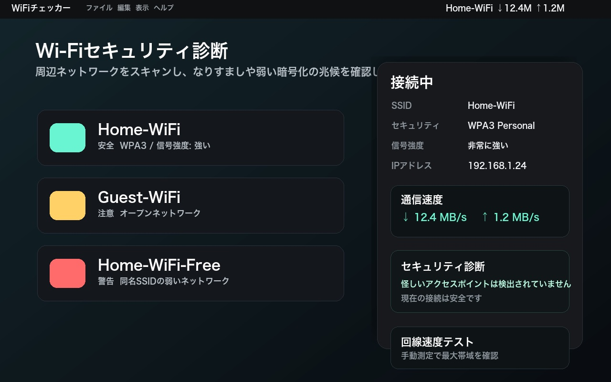

Wi-Fiの速度・電波・安全性を、Macのメニューバーでひと目で
WiFiチェッカーは、いまの通信速度をメニューバーに常時表示し、接続中のWi-Fiの電波強度やチャンネル、周辺のWi-Fiに怪しいアクセスポイントがないかまで確認できる、Mac向けのユーティリティです。
Mac App Store で入手macOS 13 Ventura 以降に対応

主な機能
-
通信速度をメニューバーに常時表示
Mac全体のダウンロード・アップロード速度を毎秒更新。接続中のネットワーク名も並べて表示できます。
-
接続中Wi-Fiの詳細
電波強度（RSSI）、ノイズ、チャンネルと帯域（2.4／5／6 GHz）、規格、暗号化方式、リンク速度、IPアドレスを確認できます。
-
周辺Wi-Fiのスキャン
近くのWi-Fiを電波の強い順に一覧表示。暗号化の有無や電波の強さがひと目で分かります。
-
セキュリティ診断
同じ名前で暗号化あり／なしが混在するなりすましアクセスポイント（Evil Twin）の兆候、紛らわしい名前のWi-Fi、暗号化なしや旧式の暗号化（WEP／WPA）を警告します。
-
回線速度テスト
ボタンひとつで、ダウンロード・アップロード速度、応答速度、ジッターを測定します。
-
Wi-Fiチャンネルの混雑チェック
周辺のWi-Fiとの重なりから空いているチャンネルの目安を表示し、ルーターの管理画面を開けます。
通信速度モニターと回線速度テスト

メニューバーの速度表示は「いま実際に流れている通信量」を毎秒観測したものです。回線そのものの最大速度を知りたいときは、回線速度テストで実際にデータを送受信して測定できます。
カフェや駅のWi-Fiも、つなぐ前に確認

周辺のWi-Fiをスキャンして、なりすましや弱い暗号化の兆候を「危険」「注意」「情報」の3段階で表示します。追加の電波を出したり通信したりせず、スキャン結果だけで判定します。
電波情報だけを使った簡易診断です。安全を保証するものではなく、通信の盗聴やDNSの書き換えなどは検出できません。
プライバシー
WiFiチェッカーは個人情報を収集しません。Wi-Fiの情報はMacの中だけで処理し、開発者に送信することはありません。SSIDを取得するために macOS が位置情報の許可を求めますが、位置そのものを取得・保存・送信することはありません。詳しくはプライバシーポリシーをご覧ください。
サポート
使い方やよくある質問、お問い合わせ方法はサポートページにまとめています。